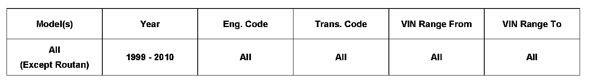
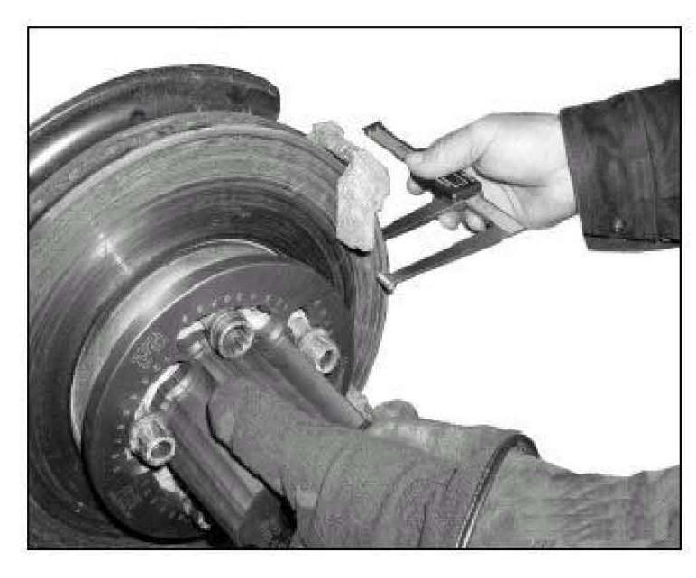
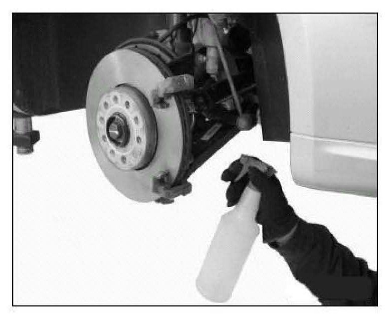
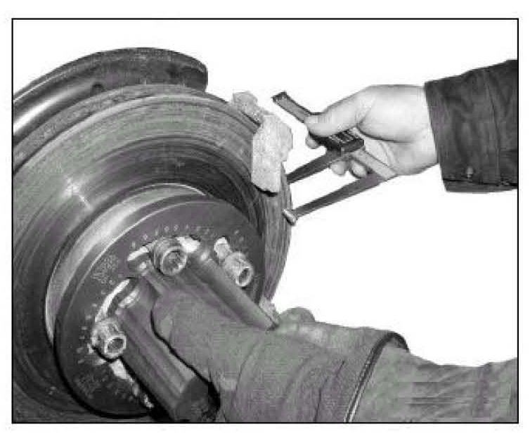
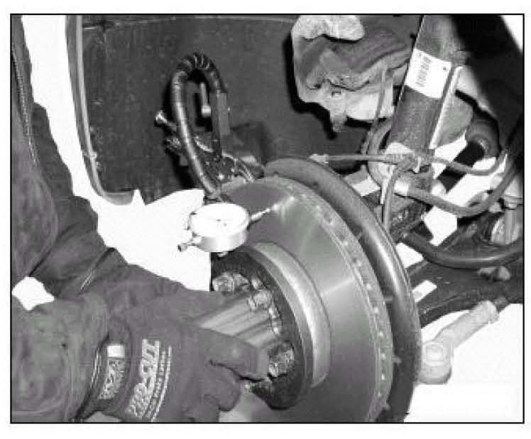
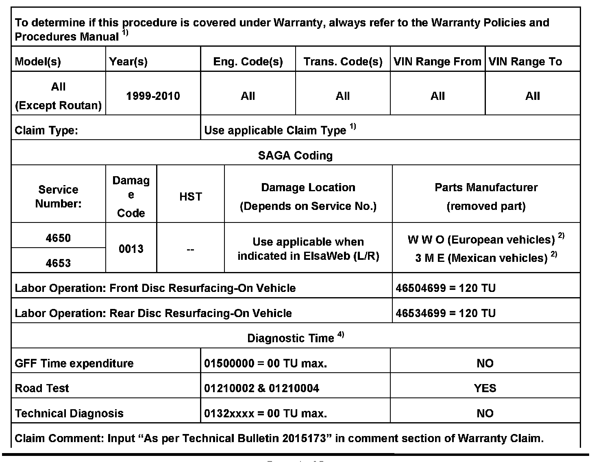
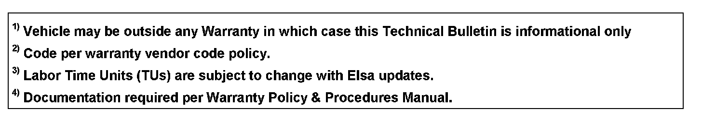
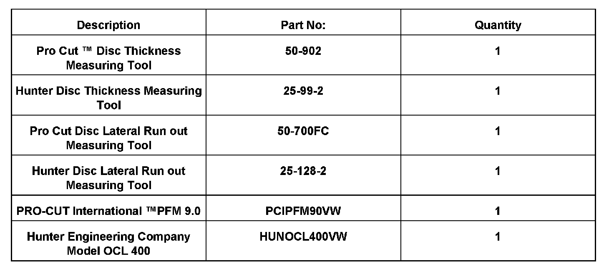

Brakes - Brake Pedal Pulsation/Vibration
46 10 02February 17, 2010
2015173 Supersedes T.B. Group 46 number 08-06 dated Oct. 29, 2008 to update
damage code in warranty table.

Vehicle Information
Condition
Brake Disc, Pulsation
When applying brakes at highway speeds the following symptoms may occur:
^ Brake pedal may pulsate
^ Vibration may be felt in vehicle body
^ Steering wheel may shake
Procedure:
^ Remove wheels and separate brake calipers from carrier as outlined in Repair Manual Group 44 Wheels, Tires, Vehicle Alignment and Group 46 Brakes Mechanical components in ElsaWeb.
Brake Disc Inspection
A detailed brake disc inspection is needed to determine if the brake disc should be machined or replaced.
^ Inspect brake disc friction surfaces on both sides of the brake disc for:
^ Severe discoloration (bluing)
^ High heat surface damage (raised hard spots)
^ Visible cracks
Brake discs showing any of the above described conditions MUST be replaced.

Disc Thickness Measuring
Each brake disc has the minimum allowed thickness cast, stamped or laser-etched into the disc hub.
^ Measure the brake disc thickness in 4 locations using either the Pro Cut International disc thickness measuring tool Part No. 50-902 or the Hunter Engineering Company disc thickness measuring tool Part No. 25-99-2 . Measurements MUST be taken the same distance from the brake disc outer circumference to ensure consistency
Note:
The brake disc must exceed the minimum thickness after the machining process is completed in order to be reused.
Brake Disc Machining
Tip:
Brake discs must be machined in pairs (front axle and / or rear axle).
Recommended on-car brake lathes are either the PRO-CUT International PFM 9.0, or the Hunter Engineering Company model OCL 400. This design of brake lathe will produce a surface quality which will provide proper brake performance without a brake pad to brake disc break-in period.
Note:
To ensure that a high quality brake disc finish is produced, brake lathe cutting tools must be maintained as directed by the lathe manufacturer.

^ Follow the brake lathe manufacturer's instructions for set-up and machining.
^ Wash the brake disc with a soap and water solution upon completion of resurfacing to remove all machining particles.

^ Re-measure brake disc thickness in 4 locations using either the Pro Cut disc thickness measuring tool Part No. 50-902 or the Hunter disc thickness measuring tool Part No. 25-99-2, to verify that minimum thickness is still exceeded. If recorded brake disc measurement is less than the minimum thickness, the brake disc MUST be replaced.
Note:
Always replace brake discs in pairs (front axle and/or back axle).

^ Measure brake disc lateral run out using Pro Cut Disc Lateral run out measuring kit Part No. 50-700FC or the Hunter Disc Lateral run out measuring kit Part No. 25-128-2 with a dial indicator.
^ Run out must not exceed 0.1mm.


Warranty

Required Parts and Tools
No Special Parts required.
Additional Information
All part and service references provided in this Technical Bulletin are subject to change and/or removal.
Always check with your Parts Dept. and Repair Manuals for the latest information.